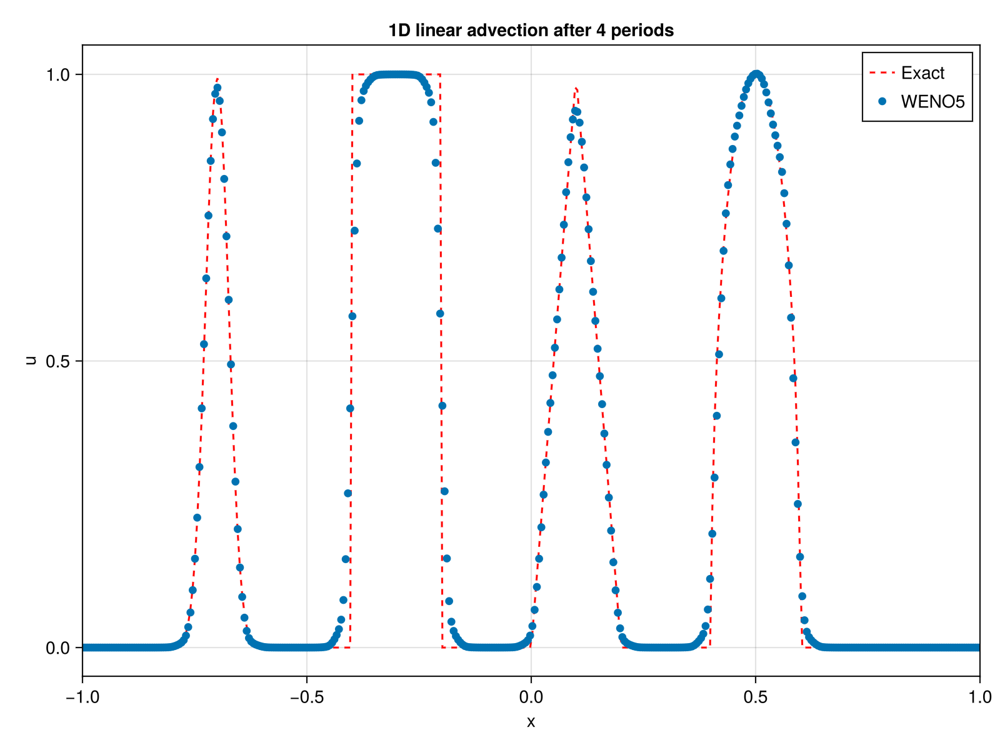

Running on GPU
To use this package on a GPU, you need to use KernelAbstractions.jl to define the arrays and run the computations. The KernelAbstractions.jl package introduces a macro-based programming model that simplifies vendor-specific GPU programming by abstracting away its complexities. This allows hardware-independent kernels to be written that can be compiled and executed on different device backends without altering the high-level code or compromising performance.
This will load an extension from FiniteDiffWENO5GPU.jl:
using KernelAbstractions
using FiniteDiffWENO5That way, the two functions WENOScheme() and WENO_step!() will automatically dispatch to the array types if the argument backend is provided. See the KernelAbstractions.jl documentation for more details on how to set up the GPU backend.
nx = 400
xmin = -1.0 xmax = 1.0 Lx = xmax - xmin
x = range(xmin, stop = xmax, length = nx)
Courant number
CFL = 0.4 period = 4
Parameters for Shu test
z = -0.7 δ = 0.005 β = log(2) / (36 * δ^2) a = 0.5 α = 10
Functions
G(x, β, z) = exp.(-β .* (x .- z) .^ 2) F(x, α, a) = sqrt.(max.(1 .- α^2 .* (x .- a) .^ 2, 0.0))
Grid x assumed defined
u0_vec = zeros(length(x))
Gaussian-like smooth bump at x in [-0.8, -0.6]
idx = (x .>= -0.8) .& (x .<= -0.6) u0_vec[idx] .= (1 / 6) .* (G(x[idx], β, z - δ) .+ 4 .* G(x[idx], β, z) .+ G(x[idx], β, z + δ))
Heaviside step at x in [-0.4, -0.2]
idx = (x .>= -0.4) .& (x .<= -0.2) u0_vec[idx] .= 1.0
Piecewise linear ramp at x in [0, 0.2]
Triangular spike at x=0.1, base width 0.2
idx = abs.(x .- 0.1) .<= 0.1 u0_vec[idx] .= 1 .- 10 .* abs.(x[idx] .- 0.1)
Elliptic/smooth bell at x in [0.4, 0.6]
idx = (x .>= 0.4) .& (x .<= 0.6) u0_vec[idx] .= (1 / 6) .* (F(x[idx], α, a - δ) .+ 4 .* F(x[idx], α, a) .+ F(x[idx], α, a + δ))
u = copy(u0_vec)
fix here boundary to periodic when equal to 2
staggering = true means that the advection velocity is defined on the sides of the cells and should be of size nx+1 compared to the scalar field u.
Multithreading to false means that the computations will be done on a single thread.
Set to true to enable multithreading if the Julia session was started with multiple threads (e.g. julia -t 4).
weno = WENOScheme(u; boundary = (2, 2), stag = true, multithreading = false)
advection velocity with size nx+1 for staggered grid (here constant)
a = (; x = ones(nx + 1))
grid size
Δx = x[2] - x[1] Δt = CFL * Δx^(5 / 3)
tmax = period * (Lx + Δx) / maximum(abs.(a.x))
t = 0
while t < tmax # take as input the scalar field u, the advection velocity a as a NamedTuple, # the WENO scheme struct weno, the time step Δt and the grid size Δx WENO_step!(u, a, weno, Δt, Δx)
t += Δt
if t + Δt > tmax
Δt = tmax - t
endend
f = Figure(size = (800, 600), dpi = 400) ax = Axis(f[1, 1], title = "1D linear advection after period periods", xlabel = "x", ylabel = "u") lines!(ax, x, u0vec, label = "Exact", linestyle = :dash, color = :red) scatter!(ax, x, u, label = "WENO5") xlims!(ax, xmin, x_max) axislegend(ax) display(f) ```
which outputs:
